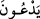

Şirk, tevbe olmaksızın bağışlanmayan bir günahtır. Şirkin dışındaki günahlar ise tevbe
olsun veya olmasın bağışlanabilir. Fakat bu herkes için değil de Allah’ın bağışlanmasını
istedikleri içindir. “Kim Allah’a ortak koşarsa” haktan “büsbütün sapıtmıştır.” Çünkü
şirk sapıklık çeşitlerinin en büyüğü, doğru yol ve istikâmetten en uzak olanıdır.
Haddâdî şöyle demiştir: “Allah’a ortak koşan kimse, doğrudan ve hidâyetten çok uzağa
sapmış ve bütün hayırlardan mahrum olmuştur. Âyette “baîd” yâni uzak kelimesinin
zikredilmesinin faydası cennetten uzaklaşmanın da mertebeleri olduğunu bildirmektedir.
Bunlardan cennete en uzak olanı Allah Teâlâ’ya ortak koşmaktır.”
Tevhid, iyiliklerin en güzeli olduğu gibi şirk de kötülük ve rezilliklerin en çirkinidir.
Günahlar; haram yemek, içki içmek, gıybet ve benzerleri gibi türlü türlüdür. Fakat
bunların en kötüsü Allah’a ortak koşmaktır. Bu sebeple Allah şirki bağışlamaz. Şirk de
açık ve gizli olmak üzere iki çeşittir. Allah her ikisinden bizi muhafaza etsin.
İyilikler de çeşitlidir. Sâlih amel bunların hepsini içine alır. Sâlih amel Allah rızâsı
kastedilerek yapılan ameldir. Bütün iyiliklerin en güzeli ise tevhid inancıdır. Çünkü o,
bütün iyiliklerin temeli ve kötülüklerin mâniidir. Bundan dolayı kıyâmet günü tartılmaz.
Rasûlullah (s.a.v.) şöyle buyurmuştur: “Âdemoğlunun yaptığı bütün iyilikler kıyâmet
günü tartılır. Ancak Allah’tan başka ilah olmadığına şehâdeti tartılmaz. Çünkü o,
terâziye konulmaz”[155] Kelime-i tevhîdi sıdk ile söyleyenin terâzisinin bir kefesine
kelime-i tevhid konulsa, diğer kefesine de yedi kat gökler, yerler ve onlarda bulunanlar
konulsa muhakkak “Lâ ilâhe illallah” daha ağır gelir.
Allah Teâlâ daha sonra onların büsbütün sapıklıklarını açıklamak üzere şöyle
buyurmuştur:
117- Onlar (müşrikler) O’nu bırakıp yalnızca bir takım dişilerden (dişi isimli
tanrılardan) istiyorlar, ancak inatçı şeytandan dilekte bulunuyorlar.
“Onlar” yâni müşrikler “O’nu” yâni Allah’ı “bırakıp yalnızca bir takım dişilerden
istiyorlar.” Âyette geçen “” ifâdesi istiyorlar anlamında olup burada ibâdet
ediyorlar, tapıyorlar demektir. Çünkü bir şeye ibâdet eden, ihtiyaç duyduğu zaman
ondan yardım ister. “Dişiler” ile de putlar kastedilmiştir. Müşrikler, putlarına kadın
isimleri vermişlerdir. Çünkü onlar putlarını kadın şeklinde tasvir ediyorlar, onlara
kadınların süslendiği çeşitli ziynetleri takıyorlar ve Lât, Menât, Uzzâ gibi ekseriyetle
kadın ismi veriyorlardı. Arapça’da bir kelime gerçekten dişi olduğu için ya da rûhu
olmayan cansız bir varlık olduğu için müennes sayılır. Cansız varlıklar, etki eden değil
etki edilen varlıklar olduğu için dişi varlıklara benzetilerek dişi sayılmıştır. Belki Allah
Teâlâ’nın putları bu kelimeyle zikretmesi, müşriklerin kadın isimleri verdikleri bu
putlara taptıklarına dikkat çekmek içindir. Çünkü onlar tesire açıktırlar, fakat